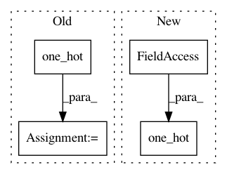

034d117e7c7f9adf46444b5b049b635e61f6d7b3,deepvariant/modeling.py,DeepVariantSmallModel,model_fn,#DeepVariantSmallModel#Any#Any#Any#Any#,1487
Before Change
return self._model_fn_predict(mode, features, logits)
// Compute loss.
one_hot_labels = tf.one_hot(labels, num_classes, dtype=tf.int32)
tf.compat.v1.losses.softmax_cross_entropy(
onehot_labels=one_hot_labels,
logits=logits,
weights=1.0,
After Change
return self._model_fn_predict(mode, features, logits)
// Compute loss.
one_hot_labels = tf.one_hot(labels, num_classes, dtype=tf.int32)
tf.compat.v1.losses.softmax_cross_entropy(
onehot_labels=one_hot_labels,
logits=logits,
weights=1.0,
In pattern: SUPERPATTERN
Frequency: 3
Non-data size: 4
Instances
Project Name: google/deepvariant
Commit Name: 034d117e7c7f9adf46444b5b049b635e61f6d7b3
Time: 2020-02-26
Author: no-reply@google.com
File Name: deepvariant/modeling.py
Class Name: DeepVariantSmallModel
Method Name: model_fn
Project Name: rusty1s/pytorch_geometric
Commit Name: 5b39d93e5f9cc5ac053b296da7723499144a8601
Time: 2019-06-28
Author: matthias.fey@tu-dortmund.de
File Name: torch_geometric/utils/metric.py
Class Name:
Method Name: mean_iou
Project Name: google/deepvariant
Commit Name: 481f316cae7e4bee4bb0d8f7b814d2c2c61c4d75
Time: 2020-01-21
Author: no-reply@google.com
File Name: deepvariant/modeling.py
Class Name: DeepVariantSmallModel
Method Name: model_fn